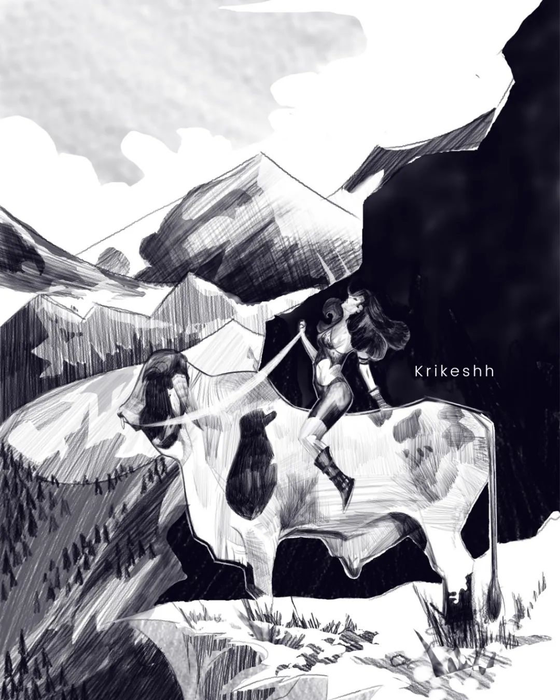
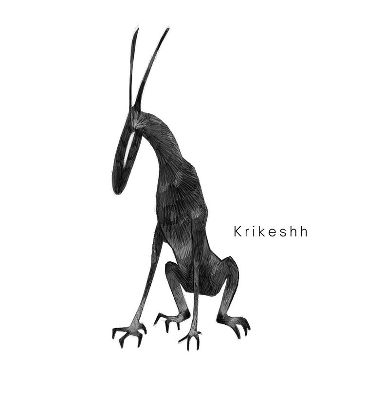
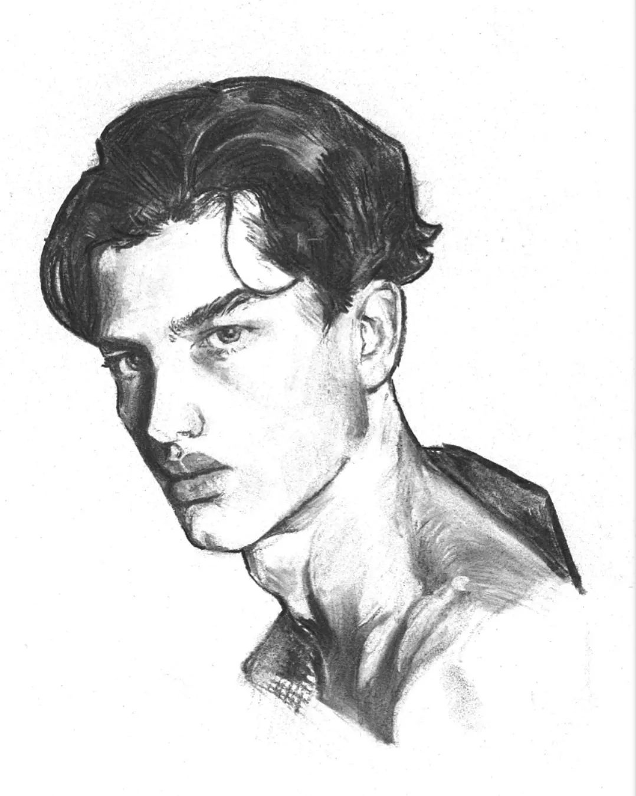
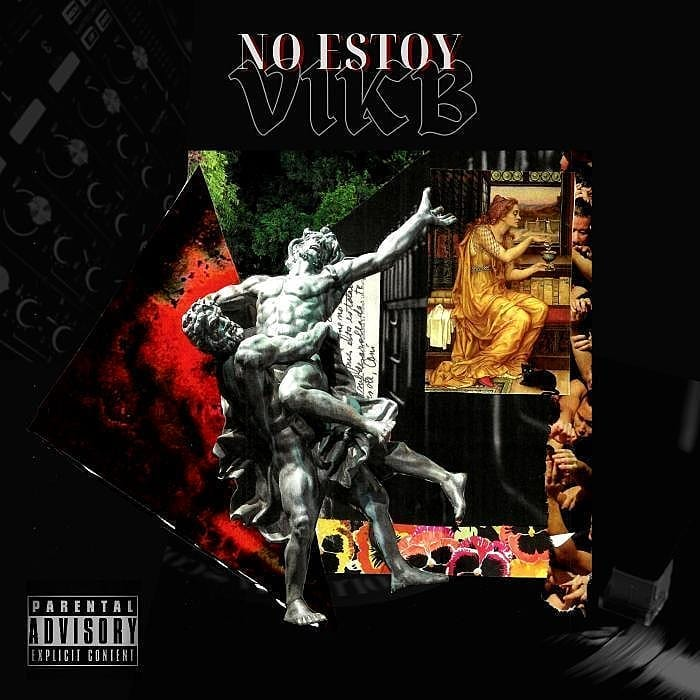
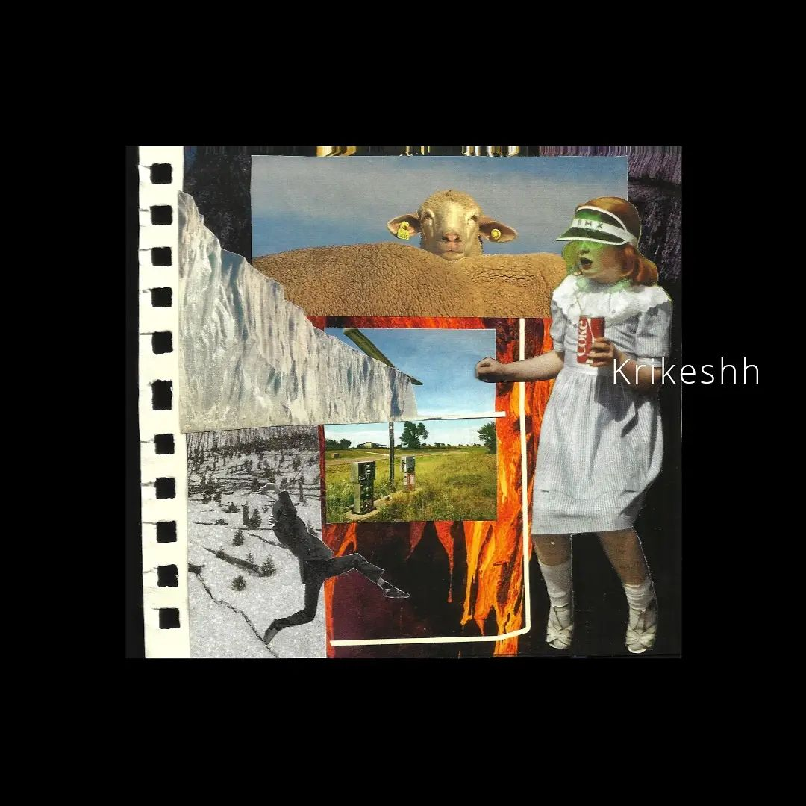
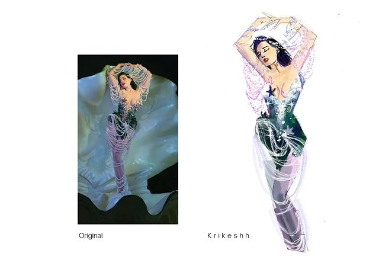
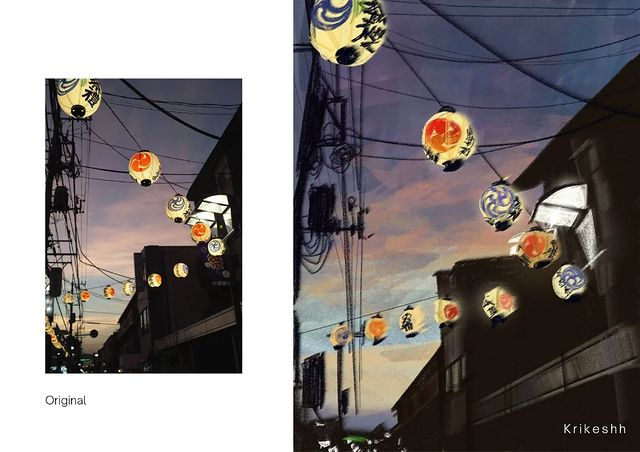
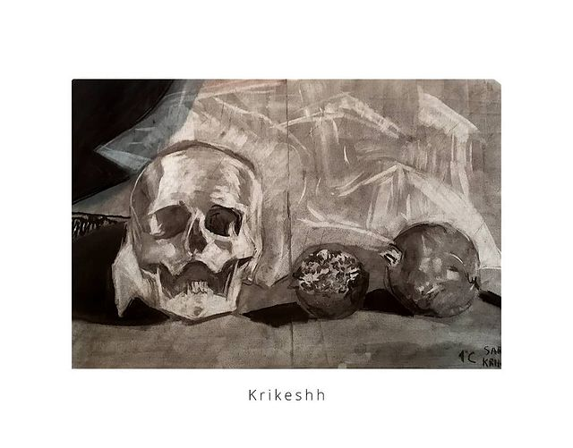

Arte conceptual para la asignatura de Teoría del Color.

Un conejo un tanto oscuro y un tanto extraño.

Retratos a carboncillo para clase de anatomía.

Portada para @vikboficial de su EP "No Estoy"

Run - Joji
Serie de collages inspirados en diferentes canciones.

Dragonball - Durag
Segundo "Song Collage".

Simple image study.

Quick color study.

Bodegón a carboncillo de la semana pasada.